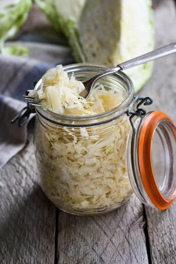

Fermented Delicacy: Sauerkraut

This one of the best fermented foods out there, and one of the simpler ones too!
It needs only two ingredients, cabbagge and salt, and that's it! Also, it's one of the bests
out there to make all sorts of condiments, or just to be eaten plain if you like it.
You can do a lot of things with it.
So let's beging with the list of ingredients:
Ingredients:
- 2 pounds cabbage (from 1 head)
- 4 teaspoons finely ground real salt
Steps:
- Remove any bruised or damaged exterior leaves from your cabbage, and then slice it in half cross-wise. Remove the cabbage's core, and then slice the cabbage into strips no wider than ⅛-inch thick.
- Toss cabbage and salt together in a large mixing bowl and let it rest about 20 minutes, or until the cabbage begins to soften and release a little juice. Then squeeze the cabbage with your hands to to soften it even further, and help it to release more juice.
- When the cabbage has become limp and has released ample juice, transfer it to your jar. Pack the sauerkraut tightly into your jar, using a kraut pounder or a wooden spoon, so that the cabbage continues to release its liquid and no air bubbles remain.
- Continue packing the cabbage into the container until the cabbage is completely submerged by its liquid. Place weights over the cabbage, and then seal the jar with your airlock. Allow the cabbage to ferment at room temperature and away from direct sunlight at least 1 month, or until done to your liking. When the sauerkaut is sour enough for your liking, transfer it to the fridge where it will keep at least 6 months and up to 1 year.